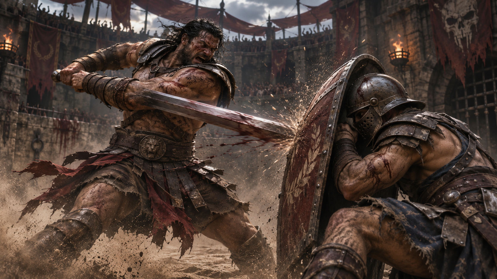

Choose your fighting style
Different weapons, armour and environments shape automatic battles. Discover your strengths and adapt to your weaknesses.
Enter the arena. Choose your weapon, earn your equipment and grow into a specialist while your character fights and works automatically.
An independent grimdark browser RPG built for your own pace, with survival work, meaningful equipment choices and progress while you are away.

I — THE OATH
Choose a fighting style, earn stronger equipment and develop expertise over time. Exact balance remains provisional during alpha.
Different weapons, armour and environments shape automatic battles. Discover your strengths and adapt to your weaknesses.
Earn rewards, improve your equipment and develop expertise. Build a fighter whose strengths reflect your choices.
Gather resources, practise crafts and train your character. Plan activities that support your long-term progression.
Your character can work while you are away. Progression limits prevent endless rewards; planned activities can continue when a skill reaches its limit.
Your choices shape the journey. The world, its combat and its progression will evolve as the game is developed and tested.
II — THE IRON ARCHIVES
We keep an open archive of the engineering behind idle worlds: combat, probability, long absences and reliable saves. The research is public; the world we build will be our own.
Enter the ArchivesABOUT THE PROJECT
The Long Vigil is my first game and a personal hobby project, not a business model. I started it to learn more about coding and game development, explore new ideas and create something enjoyable.
My hope is to eventually turn it into a full-fledged game with reliable servers and a stable experience. If the project ever generates enough income to help cover hosting and development costs, that would help make this possible.
Development may be slow or irregular. Bugs, balance issues, unfinished features and loss of progress are possible. I cannot guarantee uninterrupted availability, preservation of progress or regular updates.
Constructive feedback is always welcome. Please remember that I develop this project in my free time.
THE FIRST EMBER
The first gate is open. Build your fighter, discover your strengths and make your own path through the world.
Enter the arena